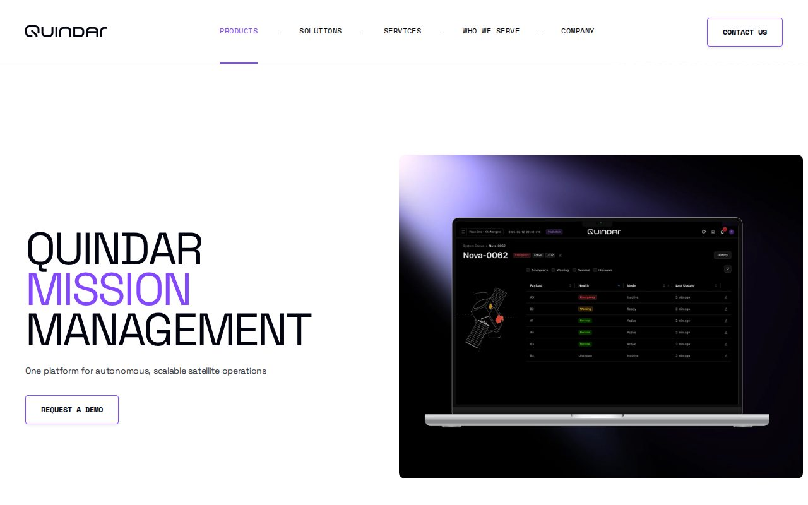

The public product page is image-heavy on mobile. Keep the same design, but resize hero media, preload the first visual, and defer non-critical scripts.
Quindar
Prepared by Elinext
Mission software delivery brief
Helping Quindar scale mission software delivery without slowing the core platform
Quindar is moving from a small expert team into more programs, integrations, and secure operations work. That growth needs delivery help that respects mission risk.
Why we're here: we saw the Full Stack Engineer role for Python, AWS, React, TypeScript, and U.S. government program work.

Our read
The hiring signal says Quindar is scaling product and program delivery at once. The open role spans Python, AWS, React, TypeScript, cloud services, and U.S. government work. That likely puts pressure on Zach's team to protect core Quindar Mission Management while shipping mission-specific needs. Recent public releases add Contact Queues, a Conjunction Dashboard, and Resource Subscriptions. If delivery splits across many programs, integration debt can slow demos and raise support load. The real need is extra senior capacity with tight ownership.
Where we'd start
Resource Subscriptions and Contact Queues now touch many flows. Start an event replay suite before more partner adapters and program variants arrive.
What we'd do
We would place a dedicated squad under Quindar's PO or engineering lead. The goal is to own one delivery lane, not add management noise.
1
Map the delivery lane
Pick one program-facing backlog and define owners, interfaces, weekly demos, and done rules with Zach's team.
2
Harden integration tests
Add contract and replay tests around Resource Subscriptions, Contact Queues, and selected ground-system adapter flows before variants grow.
3
Ship cloud work safely
Support Python, AWS, and React delivery while improving deploy checks, alerts, and incident review habits for program work.
4
Clean the public surface
Compress public product media and tune load order so technical buyers see Quindar faster on mobile during review.
Who is Elinext
Elinext is a full-cycle software development company, active since 1997, with about 700 in-house specialists and no freelancers. We build web, backend, mobile, QA, DevOps, AI/ML, and data teams. We work with customers such as Siemens, Broadcom, Volkswagen, TRUMPF, and TUI. We hold ISO 9001 and ISO 27001 certifications. For Quindar, the best fit is a dedicated team that follows your PO, your standards, and your security rules. That keeps control inside Quindar while adding delivery capacity.
SiemensBroadcomVolkswagenTRUMPFTUI
Proof

Remote network management platform
React, Python, AWS S3, and DevOps work for a telecom web platform handling large remote network payloads.
Read the case study
AWS and CI/CD optimization
DevOps support for a regulated software team, with faster build and deploy flow plus AWS cost control.
Read the case study